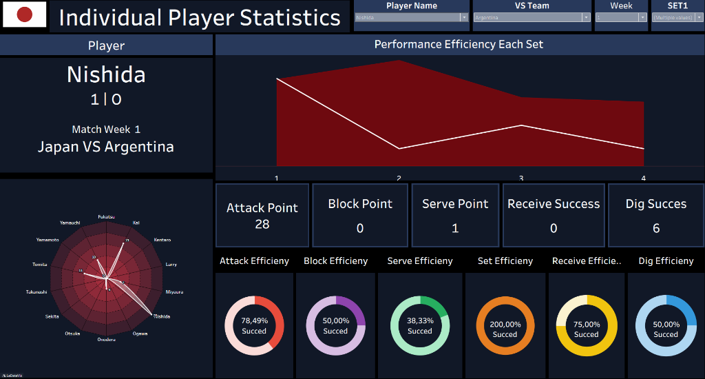
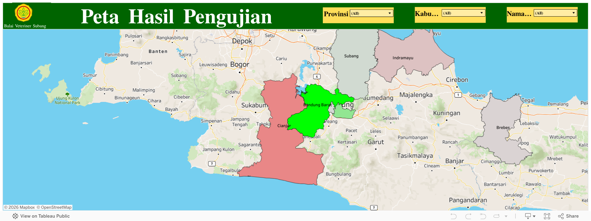
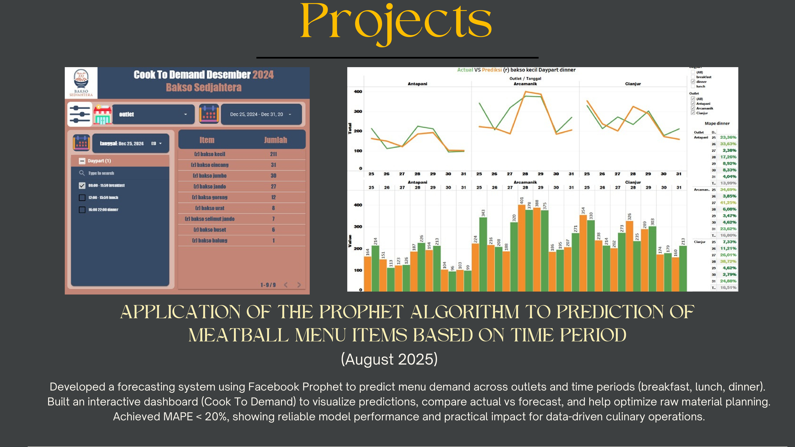
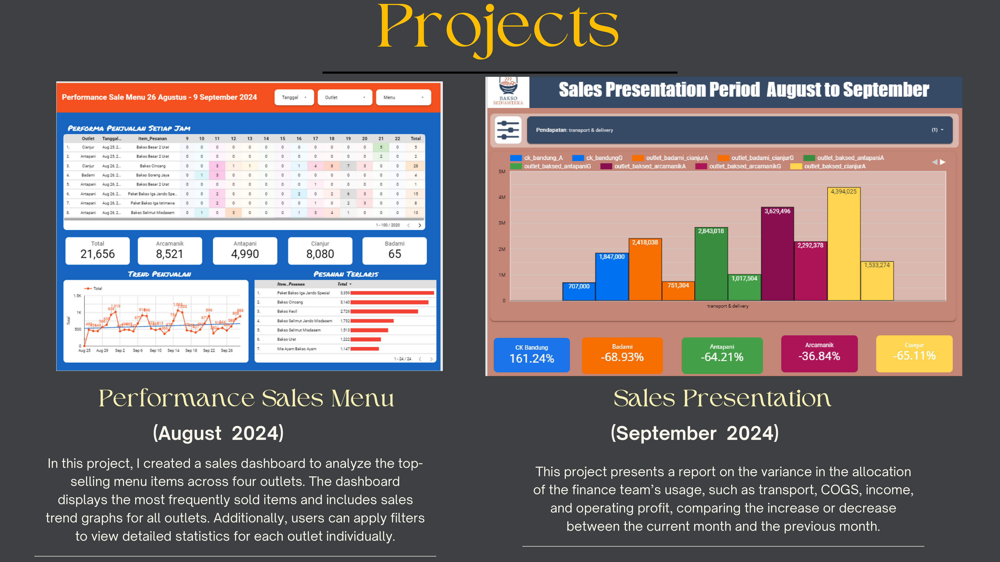
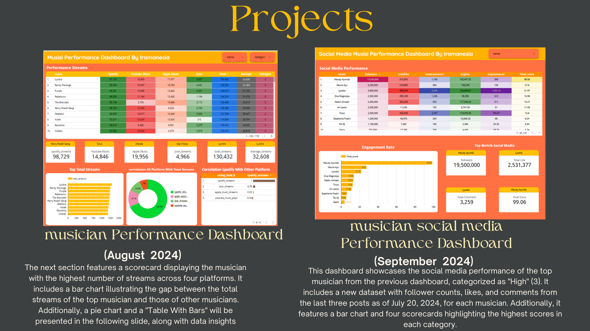
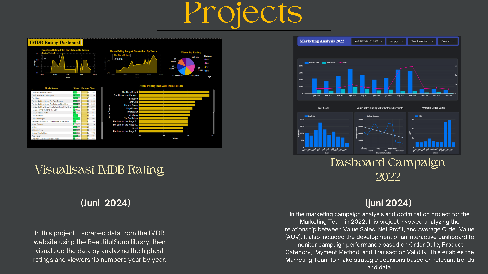
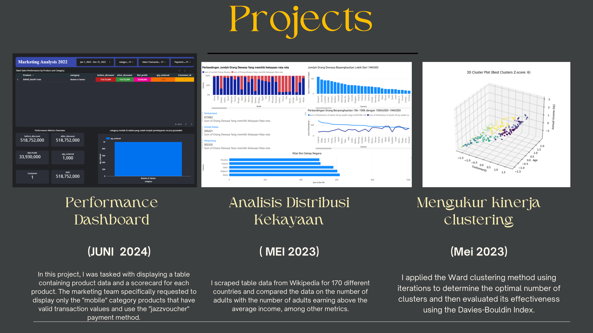
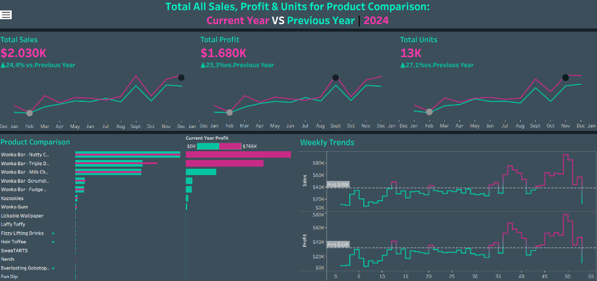

Hello, I'm
Fresh graduate Teknik Informatika dengan passion di bidang data. Berpengalaman mengubah data mentah menjadi insight bisnis yang actionable.
Saya adalah lulusan Teknik Informatika dari Institut Teknologi Nasional (ITENAS) Bandung dengan IPK 3.60/4.00. Memiliki minat dan antusiasme tinggi di bidang data, khususnya Data Analysis, Data Science, dan Data Engineering.
Sebagai Data Analyst di Shoe Workshop, fokus utama saya adalah melakukan analisis mendalam terhadap HPP, tren omzet, performa ads & marketing, dan efisiensi workflow untuk menghasilkan insight bisnis yang actionable. Saya membangun Business Intelligence Dashboard serta mengotomatisasi ekosistem operasional menggunakan Google Apps Script.
Sebelumnya, di PT Sedjahtera Boga Kreasi, saya berperan sebagai System & Data Analyst yang merancang sistem tracking penjualan otomatis dan dashboard performa. Terampil mengolah data dengan SQL, Python, Tableau, Microsoft Excel, dan Looker Studio.
Shoe Workshop
Bandung, Jawa Barat
PT Sedjahtera Boga Kreasi
Bandung, Jawa Barat

Dashboard analitik Tableau untuk memonitor performa dan efisiensi statistik pemain individual.

Peta hasil pengujian penyakit tiap daerah yang interaktif untuk analisis sebaran geografis.

Prediksi penjualan menu berdasarkan periode waktu menggunakan algoritma Prophet dari Facebook.

Sistem tracking penjualan otomatis dan dashboard performa penjualan menu dari outlet PT Sedjahtera Boga Kreasi.

Visualisasi streams musisi teratas di berbagai platform musik menggunakan berbagai tipe chart.

Web scraping data IMDB dengan BeautifulSoup dan analisis optimasi performa Campaign Marketing 2022.

Penggunaan metode Ward clustering dengan evaluasi Davies-Bouldin Index, serta pembuatan dashboard analisis distribusi kekayaan.

Analisis strategi penjualan permen di Amerika Serikat untuk identifikasi top selling products dan optimasi target pasar.
Institut Teknologi Nasional (ITENAS)
2021 — 2025
GPA: 3.60 / 4.00Relevant Courses: Machine Learning, Artificial Intelligence, Data Mining

Tertarik untuk berkolaborasi atau punya pertanyaan? Jangan ragu untuk menghubungi saya!